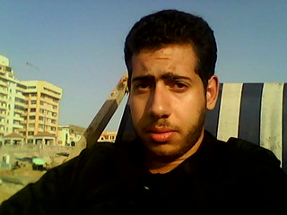

My name is : Abdallah Osama Mohamed Shaouky Ahmed El Bassiony
I was born in Maadi on 9 March 1994
I have two brothers
My Father works as a lawyer in the minister of culture
My Mother works as a general mgr of inspection in the minister of culture
My Father’s Family are from El-Gemmeiza Village – El-Sannta Dicorate – El-Gharbia- Governorate
I am a student in Faculity of Commerce & Business Adminstration (B.I.S) Department – Helwan University
I am finished the secondary stage from Hadayek El Maadi Experimental Language School
I Lived in Maadi all my life
I am familiar , helpful , brave & I have a self confidence
I love my friends and I will be very happy when I help them to achieve the success
I love joking & having fun and I don’t love making any trouples or annoying anyone from me
I see the women are the main source of life and I can’t deny the role of any woman
I can see & analyze any woman according to:-
*her beauty
*her experience
*her charisma
*her vision
*her strong & romantic feelings
I respect the woman and I see her as a main source of Romance as her heart full of Love and Happiness
and I considered the woman as an angel (a Queen of the whole world) Sent from God…
In my point of view , If any man decided to make a relationship with any woman , the man should do for her as possible as he can to own her heart and her confidence , thus, I See sometimes the woman is a motivator to the man and she is one of the reasons for the man to achieve the success as I believe that ,, Behind every great man , There is a woman
My Colleagues:-
I Love most of my collegues and I'm so happy to be with them